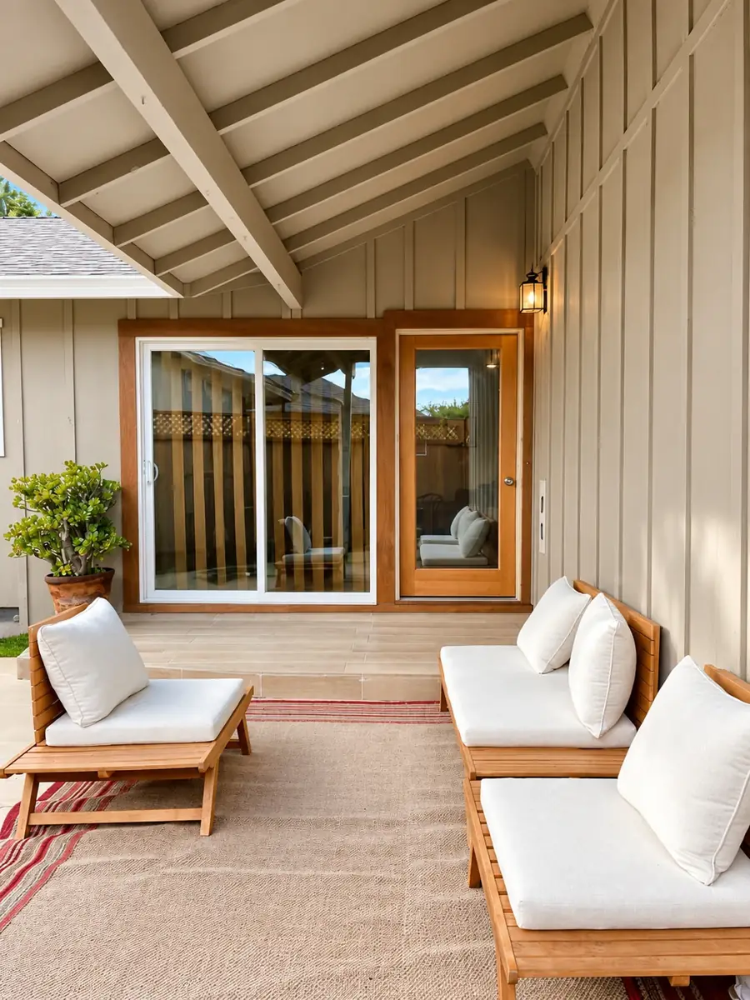

01 — SIMPLE & SLEEK
Room to slow down.
A sheltered porch, outdoor dining, and a place to make yourself at home. Settle in for a family visit or give a working week a comfortable base.
KitchenDedicated workspaceOutdoor dining & grillDriveway parking
Explore Simple & Sleek on Airbnb